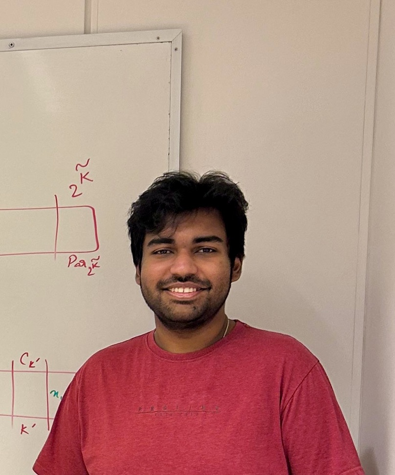

Souvik Saha
National Post Doctoral Fellow
Chennai Mathematical Institute
Siruseri, Chennai, India
souviksaha41 [at] gmail.com
CV/Google Scholar/DBLP

About
I am a National Post Doctoral Fellow at the Chennai Mathematical Institute, hosted by Pranabendu Misra.
I received my PhD from IMSc Chennai, where I was advised by Prof. Saket Saurabh.
Research
I work on algorithms for problems that are intractable in the classical sense, and on how far efficient approximation can be pushed once a structural parameter is taken into account.
- Parameterized approximation algorithms
- Parameterized complexity theory
- Graph algorithms
News
- Sep 2026 Joined CMI as a National Post Doctoral Fellow, hosted by Pranabendu Misra.
- Dec 2025 Gave a talk on “Partial Coverage on Biclique-Free Instances” at MTPA, IIT Madras.
- Aug 2025 Presented a paper at IJCAI 2025 in Guangzhou, China .
- Aug 2025 Received the ACM/IARCS and IJCAI travel grants.
- Dec 2024 Gave a talk on “Generalizations of Point Line Cover” at APGA, Bali, Indonesia.